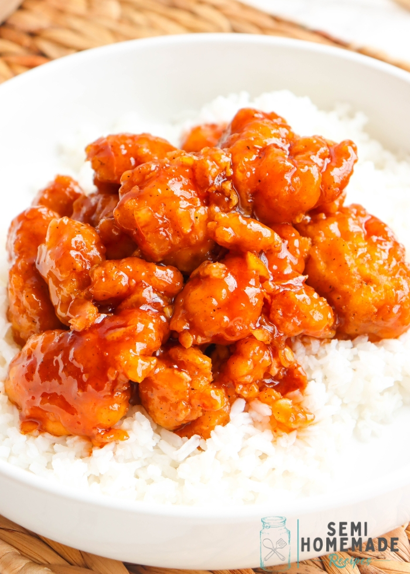

Orange Chicken Recipe

ingredients
- 4 boneless chicken
- 3 eggs whisk
- 1/3 cup cornstarch
- 1/3 cup flour
- salt
- oil for frying
Steps
- In a medium pot, add orange juice, sugar, vinegar, soy sauce, ginger, garlic, and red chili flakes. Heat for 3 minutes.
- In a small bowl, whisk 1 Tablespoon of cornstarch with 2 Tablespoons of water to form a paste. Add to orange sauce and whisk together. Continue to cook for 5 minutes, until the mixture begins to thicken. Once the sauce is thickened, remove from heat and add orange zest.
steps to make chicken
- Place flour and cornstarch in a shallow dish or pie plate. Add a generous pinch of salt. Stir.
- Whisk eggs in shallow dish.
- Dip chicken pieces in egg mixture and then flour mixture. Place on plate.
- Heat 2 -3 inches of oil in a heavy-bottomed pot over medium-high heat. Using a thermometer, watch for it to reach 350 degrees.
- Working in batches, cook several chicken pieces at a time. Cook for 2 - 3 minutes, turning often until golden brown. Place chicken on a paper-towel-lined plate. Repeat.
- Toss chicken with orange sauce. You may reserve some of the sauce to place on rice. Serve it with a sprinkling of green onion and orange zest, if so desired.
My kids are always begging me to take them to grab Chinese food. They are obsessed with orange chicken but I am never really sure whats in it….especially if they get it from a drive-thru. I wanted to create a version at home, made from scratch, with all-natural ingredients. It still has the same incredible flavor they love. Its definitely a win-win in our home.
It is wintertime in Arizona which means that the citrus is ripe for the picking. I am surrounded by neighbors who have a plethora of fresh oranges and lemons hanging from their trees. This is the perfect time of year to whip up orange and lemon dishes especially this Chinese Orange Chicken.